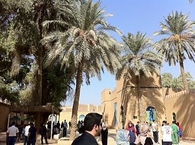
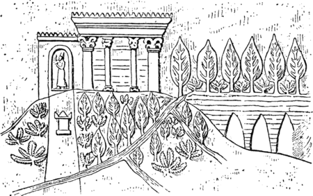

.jpg)
The Hanging Gardens of Babylon were one of the Seven Wonders of the Ancient World listed by Hellenic
culture.
They were described as a remarkable feat of engineering with an ascending series of tiered gardens
containing a
wide variety of trees, shrubs, and vines, resembling a large green mountain constructed of mud bricks. It
was
said to have been built in the ancient city of Babylon, near present-day Hillah, Babil province, in Iraq.
The
Hanging Gardens' name is derived from the Greek word κρεμαστός (kremastós, lit. 'overhanging'), which has a
broader meaning than the modern English word "hanging" and refers to trees being planted on a raised
structure
such as a terrace.
According to one legend, the Hanging Gardens were built alongside a grand palace known
as
The Marvel of Mankind, by the Neo-Babylonian King Nebuchadnezzar II (who ruled between 605 and 562 BC), for
his
Median wife Queen Amytis, because she missed the green hills and valleys of her homeland. This was attested
to
by the Babylonian priest Berossus, writing in about 290 BC, a description that was later quoted by Josephus.
The
construction of the Hanging Gardens has also been attributed to the legendary queen Semiramis and they have
been called the Hanging Gardens of Semiramis as an alternative name.
The Hanging Gardens are the only one
of
the Seven Wonders for which the location has not been definitively established. There are no extant
Babylonian texts that mention the gardens, and no definitive archaeological evidence has been found in
Babylon. Three theories have been suggested to account for this: firstly, that they were purely mythical,
and the descriptions found in ancient Greek and Roman writings (including those of Strabo, Diodorus Siculus
and
Quintus Curtius Rufus) represented a romantic ideal of an eastern garden; secondly, that they existed in
Babylon, but were destroyed sometime around the first century AD; and thirdly, that the legend refers to
a well-documented garden that the Assyrian King Sennacherib (704–681 BC) built in his capital city of
Nineveh on
the River Tigris, near the modern city of Mosul.
There are five principal writers whose descriptions of Babylon exist in some form today.
These writers concern
themselves with the size of the Hanging Gardens, their overall design and means of irrigation, and why they
were
built.
Josephus (c. 37–100 AD) quotes a description of the gardens by Berossus, a Babylonian priest of
Marduk, whose writing c. 290 BC is the earliest known mention of the gardens. Berossus described the reign
of Nebuchadnezzar II and is the only source to credit that king with the construction of the Hanging
Gardens.
In this palace he erected very high walls, supported by stone pillars; and by planting what was called a
pensile paradise, and replenishing it with all sorts of trees, he rendered the prospect an exact resemblance
of
a mountainous country. This he did to gratify his queen, because she had been brought up in Media, and was
fond
of a mountainous situation.
Diodorus Siculus (active c. 60–30 BC) seems to have consulted the 4th
century BC
texts of both Cleitarchus (a historian of Alexander the Great) and Ctesias of Cnidus. Diodorus ascribes the
construction to a Syrian king. He states that the garden was in the shape of a square, with each side
approximately four plethra long. The garden was tiered, with the uppermost gallery being 50 cubits high. The
walls, 22 feet thick, were made of brick. The bases of the tiered sections were sufficiently deep to provide
root growth for the largest trees, and the gardens were irrigated from the nearby Euphrates.
Quintus
Curtius
Rufus (fl. 1st century AD) probably drew on the same sources as Diodorus. He states that the gardens were
located on top of a citadel, which was 20 stadia in circumference. He attributes the building of the gardens
to
a Syrian king, again for the reason that his queen missed her homeland.
The account of Strabo (c. 64 BC
– 21
AD) possibly based his description on the lost account of Onesicritus from the 4th century BC. He states
that the gardens were watered by means of an Archimedes' screw leading to the gardens from the Euphrates
river.
The last of the classical sources thought to be independent of the others is A Handbook to the Seven
Wonders
of the World by the paradoxographer Philo of Byzantium, writing in the 4th to 5th century AD. The method of
raising water by screw matches that described by Strabo. Philo praises the engineering and ingenuity of
building vast areas of deep soil, which had a tremendous mass, so far above the natural grade of the
surrounding
land, as well as the irrigation techniques.
It is unclear whether the Hanging Gardens were an actual construction or a poetic creation, owing to the lack
of
documentation in contemporaneous Babylonian sources. There is also no mention of Nebuchadnezzar's wife
Amyitis
(or any other wives), although a political marriage to a Median or Persian would not have been unusual. Many
records exist of Nebuchadnezzar's works, yet his long and complete inscriptions do not mention any garden.
However, the gardens were said to still exist at the time that later writers described them, and some of
these
accounts are regarded as deriving from people who had visited Babylon. Herodotus, who describes Babylon in
his Histories, does not mention the Hanging Gardens, although it could be that the gardens were not yet well
known to the Greeks at the time of his visit.
To date, no archaeological evidence has been found at
Babylon
for the Hanging Gardens. It is possible that evidence exists beneath the Euphrates, which cannot be
excavated
safely at present. The river flowed east of its current position during the time of Nebuchadnezzar II, and
little is known about the western portion of Babylon. Rollinger has suggested that Berossus attributed the
Gardens to Nebuchadnezzar for political reasons, and that he had adopted the legend from elsewhere.
Oxford scholar Stephanie Dalley has proposed that the Hanging Gardens of Babylon were actually the well-documented gardens constructed by the Assyrian king Sennacherib (reigned 704 – 681 BC) for his palace at Nineveh; Dalley posits that during the intervening centuries the two sites became confused, and the extensive gardens at Sennacherib's palace were attributed to Nebuchadnezzar II's Babylon. Archaeological excavations have found traces of a vast system of aqueducts attributed to Sennacherib by an inscription on its remains, which Dalley proposes were part of an 80-kilometre (50 mi) series of canals, dams, and aqueducts used to carry water to Nineveh with water-raising screws used to raise it to the upper levels of the gardens
Dalley bases her arguments on recent developments in the analysis of contemporary Akkadian inscriptions. Her main points are:
●The name Babylon, meaning "Gate of the Gods", was the name given to several Mesopotamian cities. Sennacherib renamed the city gates of Nineveh after gods, which suggests that he wished his city to be considered "a Babylon";
●Only Josephus names Nebuchadnezzar as the king who built the gardens; although Nebuchadnezzar left many inscriptions, none mentions any garden or engineering works. Diodorus Siculus and Quintus Curtius Rufus specify a "Syrian" king. By contrast, Sennacherib left written descriptions, and there is archaeological evidence of his water engineering. His grandson Assurbanipal pictured the mature garden on a sculptured wall panel in his palace.
●Sennacherib called his new palace and garden "a wonder for all peoples". He describes the making and operation of screws to raise water in his garden.
●The descriptions of the classical authors fit closely to these contemporary records. Before the Battle of Gaugamela in 331 BC Alexander the Great camped for four days near the aqueduct at Jerwan. The historians who travelled with him would have had ample time to investigate the enormous works around them, recording them in Greek. These first-hand accounts have not survived into modern times, but were quoted by later Greek writers.
●King Sennacherib's garden was well-known not just for its beauty – a year-round oasis of lush green in a dusty summer landscape – but also for the marvelous feats of water engineering that maintained the garden. There was a tradition of Assyrian royal garden building. King Ashurnasirpal II (883–859 BC) had created a canal, which cut through the mountains. Fruit tree orchards were planted. Also mentioned were pines, cypresses and junipers; almond trees, date trees, ebony, rosewood, olive, oak, tamarisk, walnut, terebinth, ash, fir, pomegranate, pear, quince, fig, and grapes. A sculptured wall panel of Assurbanipal shows the garden in its maturity. One original panel and the drawing of another are held by the British Museum, although neither is on public display. Several features mentioned by the classical authors are discernible on these contemporary images.
Of Sennacherib's palace, he mentions the massive limestone blocks that reinforce the flood defences. Parts of the palace were excavated by Austin Henry Layard in the mid-19th century. His citadel plan shows contours which would be consistent with Sennacherib's garden, but its position has not been confirmed. The area has been used as a military base in recent times, making it difficult to investigate further.
The irrigation of such a garden demanded an upgraded water supply to the city of Nineveh. The canals stretched over 50 kilometres (31 mi) into the mountains. Sennacherib was proud of the technologies he had employed and describes them in some detail on his inscriptions. At the headwater of Bavian (Khinnis) his inscription mentions automatic sluice gates. An enormous aqueduct crossing the valley at Jerwan was constructed of over two million dressed stones. It used stone arches and waterproof cement. On it is written:
Sennacherib king of the world king of Assyria. Over a great distance I had a watercourse directed to the environs of Nineveh, joining together the waters.... Over steep-sided valleys I spanned an aqueduct of white limestone blocks, I made those waters flow over it.
Sennacherib claimed that he had built a "Wonder for all Peoples", and said he was the first to deploy a new casting technique in place of the "lost-wax" process for his monumental (30 tonne) bronze castings. He was able to bring the water into his garden at a high level because it was sourced from further up in the mountains, and he then raised the water even higher by deploying his new water screws. This meant he could build a garden that towered above the landscape with large trees on the top of the terraces – a stunning artistic effect that surpassed those of his predecessors.